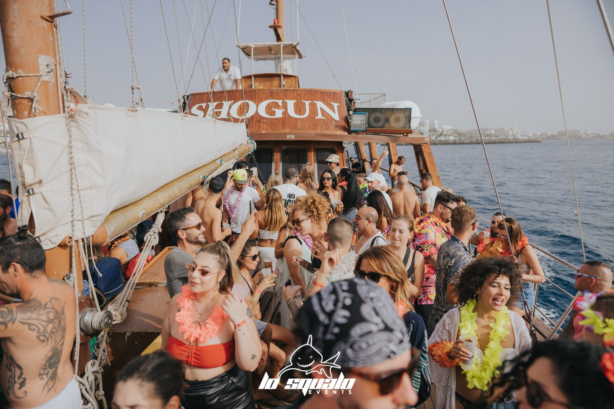
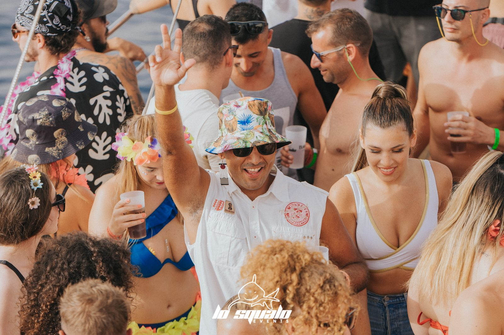
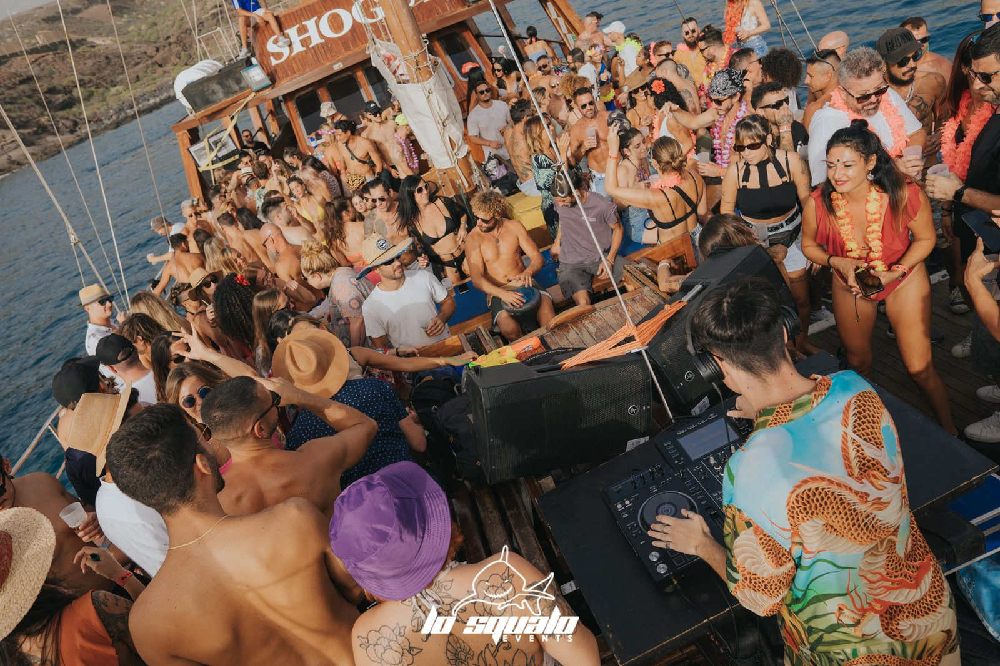
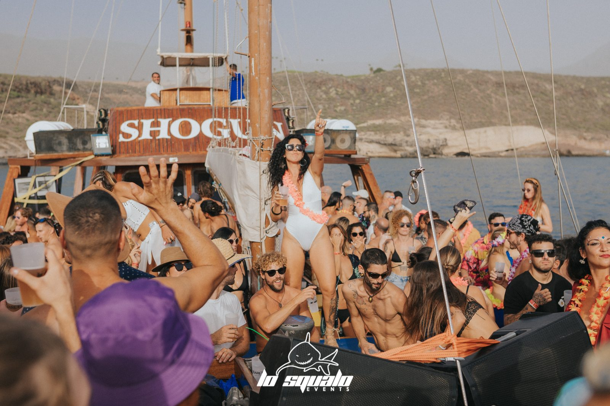
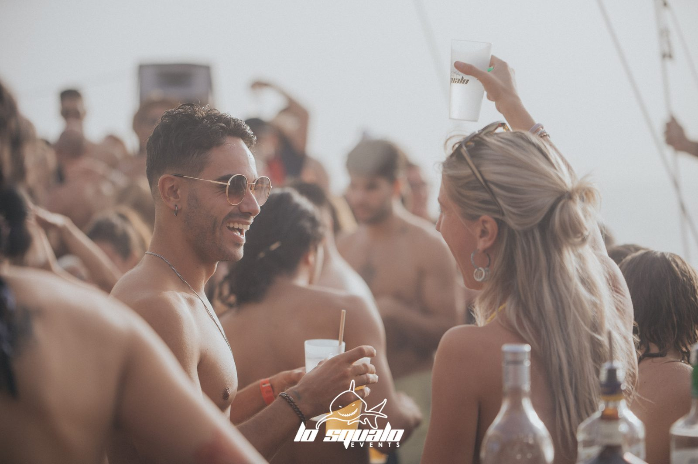
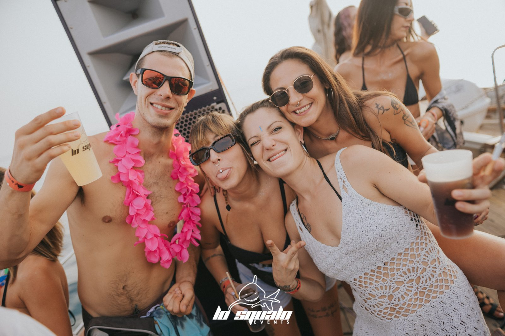
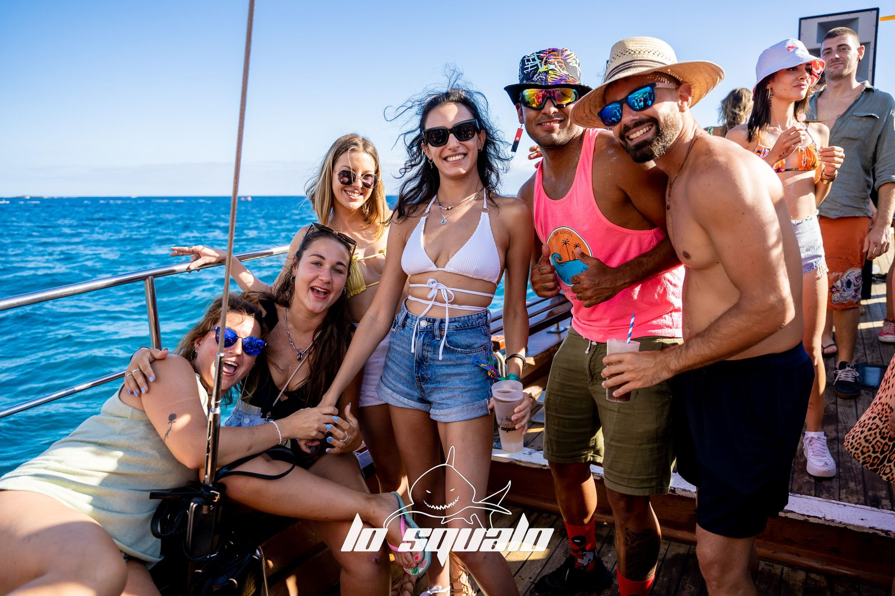
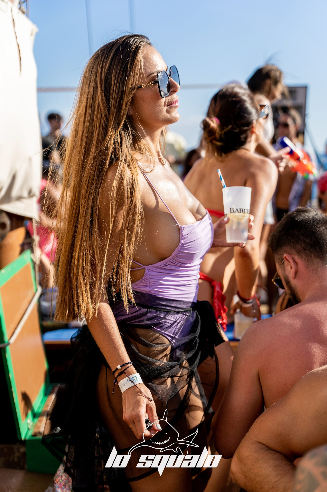

Vuoi festeggiare in alto mare? Lo Squalo organizza e coordina la tua Boat Party a Tenerife: ti aiutiamo a scegliere l'imbarcazione e la formula giusta per il tuo gruppo, con DJ set, open bar e partenza dalla costa sud.
Un servizio di organizzazione e assistenza pensato per gruppi di amici, compleanni, addii al celibato e nubilato e per chi vuole un piano diverso sull'isola: ci dici quanti siete e quando, e al resto pensiamo noi.
Scrivici quanti siete e quando: ti proponiamo la formula giusta, con disponibilità e condizioni.
💬 Contattaci su WhatsApp